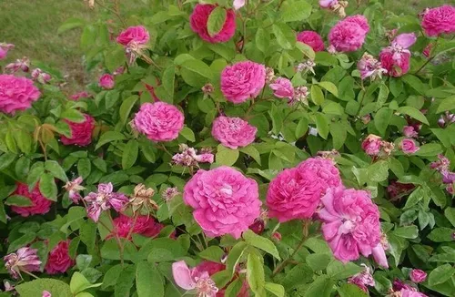

El amate amarillo es un árbol emblemático de México. Su nombre proviene del náhuatl "amatl", que significa papel, ya que sus cortezas se utilizaban para elaborar papel en la época prehispánica. Este árbol es originario de climas cálidos y húmedos, y puede alcanzar una altura de hasta 30 metros. Su característica principal es la belleza de sus hojas, que en otoño toman un color amarillo dorado, iluminando el paisaje como si fuera un campo de oro.
Además de su uso ornamental, el amate amarillo tiene un papel importante en la cultura mexicana. Su madera era empleada por los antiguos mesoamericanos para fabricar herramientas y utensilios, mientras que sus hojas y cortezas se utilizaban en ceremonias religiosas y curativas. Es un símbolo de resistencia y conexión con la naturaleza.
En la actualidad, el amate amarillo se encuentra protegido en diversas regiones debido a la deforestación y la pérdida de su hábitat natural. Los esfuerzos de reforestación y concienciación ambiental han sido clave para preservar este importante árbol, que forma parte de la riqueza natural y cultural de México.

El amate amarillo no solo es un deleite para la vista, sino también un importante recurso ecológico. Contribuye a la estabilidad del suelo, protege los ríos y alberga una gran diversidad de fauna, desde aves hasta pequeños mamíferos. Su conservación es esencial para garantizar el equilibrio de los ecosistemas en los que habita.